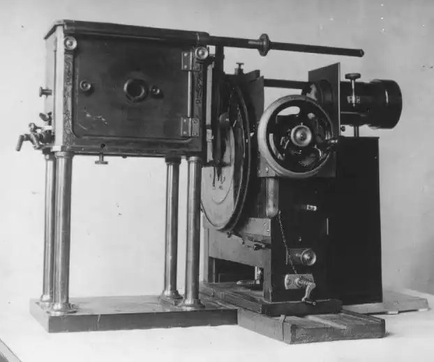
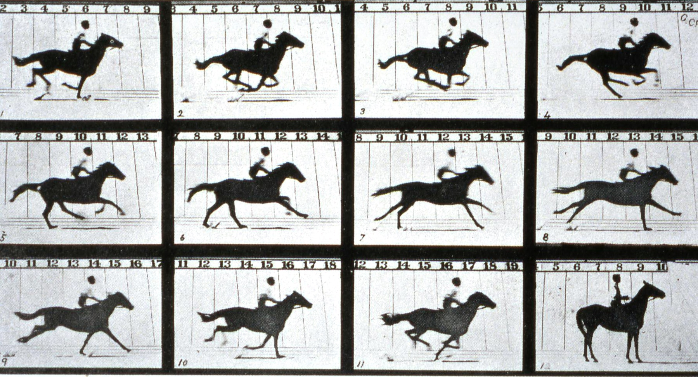

Optické hračky a prvé kinematografické vynálezy
Taumatrop
Taumatrop je jedno z prvých zariadení, ktoré dokázali vytvoriť ilúziu pohybu. Bol navrhnutý v
roku 1825
astronómom Johnom Hershelom, preslávil ho však až neskôr Londýnsky fyzik Dr. John A. Paris.
Taumatrop sa skladá z papierového disku, ku ktorému sú po stranách uchytené dve šnúrky. Každá
strana
kruhu obsahovala obrázok. Človek potom chytil taumatrop za dve šnúrky a začal ich ťahať do
opačných
smerov. Disk sa následne začal rýchlo točiť, čo spôsobilo, že oba obrázky vyzerali spojené dokopy. Tento
vynález predstavoval opakovanie obrazov v tej najjednoduchšej podobe.
Fenakistoskop
Fenakistoskop vymyslel v roku 1832 belgický fyzik Joseph Plateau. Toto zariadenie pozostávalo z
dvoch
kruhových diskov pripevnených kolmo k ihlici. Vonkajší disk mal okolo obvodu vertikálne štrbiny a
vnútorný obsahoval kresby, ktoré znázorňovali po sebe idúce fázy pohybu. Oba disky sa točili spolu v tom
istom smere. Keď sa následne disky zdvihli k zrkadlu a človek sa pozrel cez štrbiny dovnútra, obrázky na
druhom disku sa zdali byť pohyblivé.
Zoetrope
Zoetrope, známy aj ako „koleso života“, bol vynájdený v roku 1834 britským matematikom Williamom
Georgom
Hornerom. Zoetrope nepotreboval zrkadlo. Skladal sa z krátkeho cylindra s otvoreným vrchom,
ktorý rotoval okolo stredovej osi. Do vonkajších strán cylindra boli v rovnakých rozostupoch vyrezané
dlhé štrbiny. Vnútorná strana obsahovala sekvenciu kresieb na pásoch papiera umiestnených priamo pod
štrbinami. Keď sa valec roztočil, diváci sa pozerali cez otvory na obrázky na protiľahlej
stene. Týchto obrázkov bolo okolo dvanásť.
Praxinoskop
Praxinoskop, zariadenie, ktoré je považované za predchodcu filmového projektoru, vytvoril v roku
1877
inžinier z Paríža, Emile Reynaud. V tomto prípade boli obrázky umiestnené okolo vnútorných stien
vonkajšieho cylindra. Každý obrázok sa odrážal od zrkadiel prichytených ku vonkajším stenám vnútorného
cylindra. Keď sa cylinder roztočil, ilúzia pohybu bola viditeľná v hociktorom zo zrkadiel. O dva roky
neskôr vymyslel Reynaud praxinoskopové divadlo, veľkú drevenú krabicu obsahujúcu praxinoskop. Divák sa
pozeral cez malú dierku vo veku krabice na divadelnú scénu, v ktorej sa prostredníctvom pohybujúcich sa
obrázkov odohrával príbeh.
Zoopraxiskop
Zoopraxiskop bol prvým výrazným predchodcom dnešnej kinematografie. Vynašiel ho Eadweard
Muybridge, ktorému sa v roku 1878 prvýkrát podarilo zachytiť pohyb závodného koňa prostredníctvom
statických kamier. Zoopraxiskop dokázal premietať 200 obrázkov na obrazovku.


https://filmschoolrejects.com/experience-horse-motion-inside-zoopraxiscope/
Hannibal W. Goodwin
V roku 1889 američan Hannibal W. Goodwin vyvinul transparentný, celuloidový filmový základ, ktorý začal
vyrábať George Eastman. Prvýkrát v histórii mohli byť dlhšie sekvencie obrázkov umiestnené na jednom
kotúči.
Bratia Lumièrovci
V roku 1892 bratia Lumièrovci vynašli kinoru. Tento prístroj spájal snímanie aj projekciu.
Bolo to domáce zariadenie pozostávajúce zo 14 centimetrového kolesa, ktoré držalo sériu obrazov. Po
roztočení kolesa sa pred objektívom začali obrazy rýchlo pohybovať, čo vytvorilo ilúziu pohybu.
Toto zariadenie prinieslo zrod filmu.
Tento vynález však len viedol k ich najväčšiemu objavu - kinematografu, ktorý vynašli v roku
1895. Toto zariadenie slúžilo aj ako tlačiareň, dokázalo vytvoriť kópie na pozitíve. Tieto
kópie mohli byť následne premietané, kinematograf teda slúžil aj ako projektor. Prvý takto
vyrobený film
bol Robotníci odchádzajú z Lumierovej továrne z roku 1895. Bolo to vôbec
prvýkrát v histórii, kedy si ľudia mohli prísť pozrieť film na veľké plátno. Práve s príchodom
kinematografu môžeme hovoriť o začiatku modernej kinematografie.
Georges Mélies
Jednou z techník animácie, ktorá bola v tom čase využívaná, bolo stop-motion. Princíp
stop-motion animácie je veľmi jednoduchý, je založený len na fotografovaní jednotlivých snímkov. Na
každú ďalšiu
snímku sa vec, ktorá sa má pohybovať, trochu posunie. Keď sa tieto
snímky usporiadajú po sebe, je vytvorené zdanie pohybu. Túto metódu na prelome 19. a 20. storočia
najviac využíval francúzsky filmový tvorca
George Mélies. Medzi jeho najznámejšie filmy patrí Cesta na Mesiac z roku 1902.
Rotograf
V roku 1915 Max a Dave Fleischerovci vynašli rotograf, zariadenie, ktoré umožňovalo vložiť
animované
postavičky pred živé realistické pozadie. Toto pozadie bolo nafilmované a
premietnuté po jednotlivých snímkach na kúsok skla. Nádoba obsahujúca animovanú postavičku sa následne
postavila pred toto sklené pozadie a celá scéna sa znovu nafilmovala. S touto technikou Fleischer
vytvoril známe
postavičky ako Klaun Koko, Betty Boop, Popeye a Superman .
Pat Sullivan
Prvýkrát sa v tomto období objavila technika animácie pomocou kresieb, ktoré boli špeciálne
vytvorené tak, aby budili na veľkom plátne dojem pohybu. Jedným z prvých a najznámejších výtvorov
pomocou tejto techniky bol Kocúr Felix z roku 1918, vytvorený austrálskym cartoonistom Patom
Sullivanom a naanimovaný
Ottom Mesmerom.